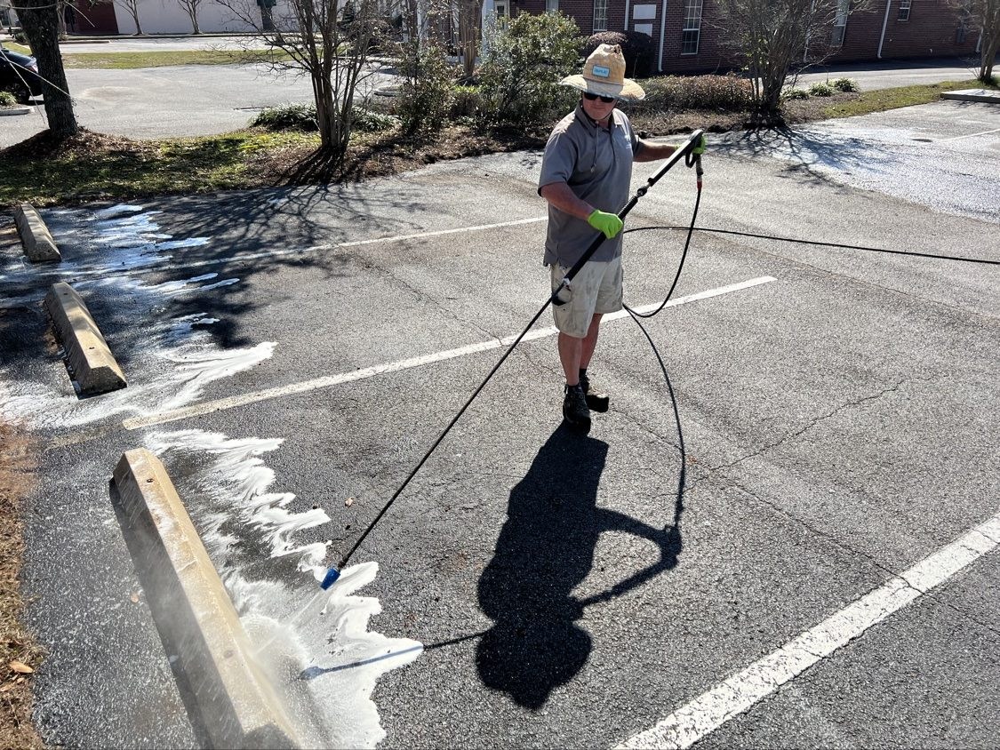

From the blog
Soft Washing vs Pressure Washing in Mobile, AL: Which One Does Your Home Need?
November 23, 2026

Homeowners around Mobile ask us this one all the time. Soft washing and pressure washing sound like two names for the same job, but they are different tools for different surfaces. Pick the wrong one and you can damage siding, strip paint, or chew up a wood deck. Pick the right one and the surface comes clean and stays clean longer. Here is the plain version of how we decide.
What pressure washing is
Pressure washing uses high pressure water to blast dirt, algae, and grime off hard surfaces. It is the right call for concrete driveways, sidewalks, patios, and parking areas. Concrete can take the force, and the force is what lifts years of ground in stains and tire marks. On a driveway in West Mobile or a patio in Tillmans Corner, pressure washing is usually the fastest way to a clean result.
What soft washing is
Soft washing uses low pressure water plus a cleaning solution that kills algae, mildew, and mold at the root. The solution does the work, not the force. That matters on siding, roofs, and painted surfaces, where high pressure can force water behind vinyl, lift shingles, or strip paint. In Mobile humidity, the green and black growth on a house is usually alive, so killing it matters more than blasting it. A soft wash also keeps the growth from coming back as fast.
Which surfaces get which method
- House siding. Soft wash. Vinyl, Hardie board, brick, and stucco all clean best with low pressure and the right solution. House soft washing runs from $349 for a 1,000 sq ft home to $899 for a 4,000 sq ft home, and a two story home doubles the price.
- Roofs. Soft wash only. Never pressure wash a roof. High pressure strips granules off shingles and shortens the life of the roof.
- Concrete driveways and walkways. Pressure wash. Concrete is built for it, and it is the best way to lift stains that have soaked in over time.
- Wood decks. Low pressure wash with the right tip and distance. Too much pressure scars the wood and raises splinters. A wood deck cleaning starts at $205.
- Fences. It depends on the material. Vinyl fences soft wash well. Wood fences need a gentle wash so the boards are not damaged.
- Windows. Neither. Windows get a hand wash with a squeegee finish. Up to 10 windows runs $129.
Why Mobile homes need both
Our Gulf Coast humidity feeds algae and mildew year round. A house in Midtown Mobile can grow green siding in a single summer, while the driveway in the same yard collects black tire marks and leaf stains. One visit often uses both methods: soft wash the house and roof, pressure wash the concrete. That is normal, and it is why a quote should list each surface separately instead of one flat number for everything.
What to ask before you hire anyone
- Which method will you use on my siding, and why?
- Will you pressure wash my roof? If the answer is yes, find another company.
- Is the cleaning solution safe for my plants and pets?
- What is included in the price, and what costs extra?
When to book
Any time of year works in Mobile, but fall and winter are good picks. The summer heat is gone, the crew can work comfortably, and your home looks its best for the holidays. If your siding is green, your roof has dark streaks, or your driveway is more gray than white, it is time.
Not sure which wash your home needs? We can tell you.
Kinney Cleaning Services does soft washing and pressure washing across Mobile, Saraland, Satsuma, Semmes, Theodore, and the Eastern Shore. Veteran owned and operated, with 5-Star Google Reviews.
Call (251) 767-0754 Get a Custom Quote